← 返回阅读库 · 原论文目录
论文讲解阅读文档 · 机器人学 · v116
SAC Soft Actor-Critic Part 2[1812.05905]
视频时长 00:10:53；讲解文字 4,369 字符；提取讲解画面 55 张。按视频原顺序阅读，每段文字保留时间戳。
文字来自整段视频的自动语音转写，按自然停顿分段，并与 PPT / 论文页面 / 演示画面对齐。未将讲解压缩为摘要；术语、数字和口述公式请结合画面及原论文核对。 阅读稿已校正规范部分明确术语误识别；原始逐字稿和每处修改记录另行保留。
讲解画面为源视频截图（640×360），不是可编辑 PPT 文件。全片按每秒 2 帧扫描内容变化，逐步展开页保留；连续动画保留代表画面。清晰度受源视频限制。
下载完整资料包 · 含离线 HTML、PDF、Word、全部 PPT 画面和字幕。
原论文与材料
Soft Actor-Critic Algorithms and Applications · 下载完整 PDF（17 页）
按时间阅读
00:00:00–00:00:12 · 画面 001
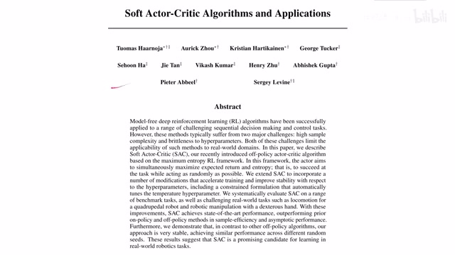
00:00:00–00:00:12 · 画面 001大家好，今天我们来到 Soft Actor Critic Part 2Soft Actor Critic Algorithms and Applications。只要解决第一篇论文中遗留的一些问题，那么我们来快速回顾一下这个 Soft Actor Critic，为什么它是一个 Soft Actor Critic 呢？这里我们看到我们的 Policy 是希望优化这个序列，使得这个序列呢不仅是累积的这个 Reward 它的期望呢是最大的
00:00:12–00:01:15 · 画面 002
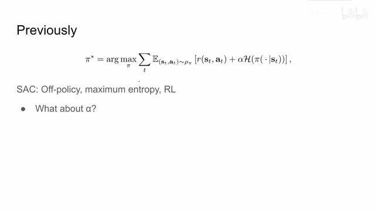
00:00:12–00:01:15 · 画面 002同时呢，我们还加了一个 entropy term，这个 entropy 呢用来鼓励我们的 agent，我们的 policy 去探索更多的这个 state。那么在加入了这个 entropy 之后呢，它并不影响我们整个的 actor critic 它的收敛，同时呢保证了我们的算法更具有鲁邦性。但是呢，正如我们在上一期视频的最后提到的，整个这个算法中呢这个α用来控制这个 reward 和这个 entropy 它们之间的 tradeoff 的这个α它是需要人文来给定的。那么作者就想，我能不能通过一种手段来自动化的给出这个α的值呢？那么在这篇论文中作者又帮我们设计了一种机制来自动的估计这个α的值。那么为了实现这个自动的估计，我们需要对原来的表数做一点调整。这个式子是我们一开始想 maximize 的式子
00:01:15–00:03:15 · 画面 003
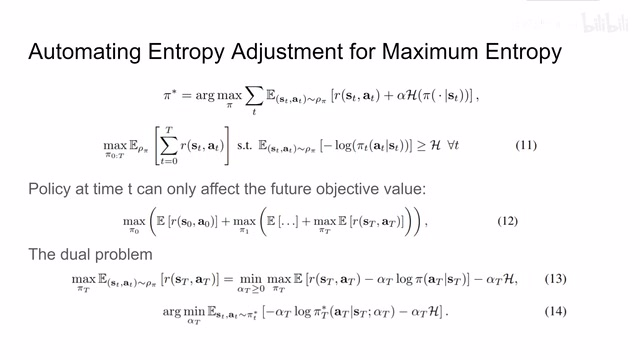
00:01:15–00:03:15 · 画面 003那么我们还是在把它拆开，前面这部分呢是 reward 的和嘛，我们希望它累积的 reward 达到最大。但是呢，后面这个 entropy 还有这个 alpha 呢，我们需要对它做一点调整。这里呢，为了让这一整项既可能的大，我们呢给它设置一个 lower bound 是这个 h。那么经过这样的调整之后呢，我们原来的式子就可以写成这个样的式子，把我们的 entropy 呢作为一个条件限制来加入到这个式子里面而且这里有一个小 trick，就是 entropy 的形式本来是积分负的 P 乘以 logP，你当然可以根据期望的定义把它写成期望的形式。那么这个 entropy 就变成了这个样子。那么随后我们要对这个定义来进行展开，这里我们知道当前的一个时刻的 policy 只能影响这个时刻之后发生的 object value
所以这里我们看到作者把这个式子打开写成了一个迭代的形式，我们这个 policy0 影响的是整个后面这一串，所以它要 maximize 整个后面这一串的值。而对于我们的 policy1 在第 0 时刻发生的 reward，它已经是 policy1 影响不了的了，所以它只能 maximize 后面的这一块。那么就这样子不断的迭代下去，最后我们到这个序列的结尾这个 T 这里那么它的这个 policy t 呢就只能影响最后一个 reward，而且因为它是序列的结束，所以呢就只有这一个 reward。随后呢我们就要从里向外一层一层的把这个迭代来打开。我们想要一个 policy 来使得这个 reward 最大，但是同时呢，因为我们之前还有一个限制条件需要它满足，就是对于任意的时刻来说我希望这个期望它要大于我们给定的这个 entropy
00:03:15–00:04:03 · 画面 004
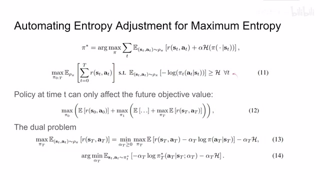
00:03:15–00:04:03 · 画面 004所以呢，这里作者把它变成一个对我问题，这样子呢就把这些所有的限制给它加到我们的这个目标函数里面了。那么具体来看呢，就是这是原来的式子，我把整个这个式子把这个 h 移到左边，把这整个式子乘上这个 alpha capital t 给它加到原始来的这个目标的式子里面，那么就是得到这样一个式子。这样子呢原来的一个有限制的这么一个 maximize 的问题呢就变成了这样一个没有限制的需要优化一个新的目标函数的这么一个表达。那么这里呢，作者认为说因为我们的 objective 是 linear 的线性的，然后呢我们的 constraint 这个 entropy 呢它是一个 to 的函数，所以呢我们这里有这个强队友的性质，也就是说它的最优值跟左边的这个最优值是一样的。但是当然有其他学者认为说因为我们这个 py 这个 policy 它是一个 neural network
00:04:03–00:04:04 · 画面 005
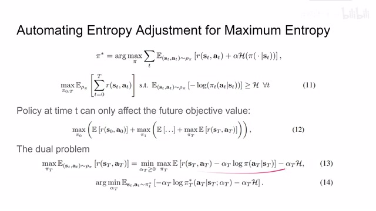
00:04:03–00:04:04 · 画面 00500:04:04–00:04:36 · 画面 006
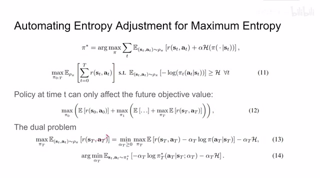
00:04:04–00:04:36 · 画面 006它不一定能够保证说这个 entropy 它是一个 convex 它是一个 to 的，所以说呢，这个就是搭了各自的观点嘛。那么很显然的，这个 alpha t 和这个 pi t 它们两个是相关的嘛。所以呢，作者这里说我们先找到这个 optimal 的这个 pi，我们叫它 pi star，然后呢再去优化这个 alpha。这样子呢，我们上面的式子呢就可以写成这个形式。
00:04:36–00:04:37 · 画面 007
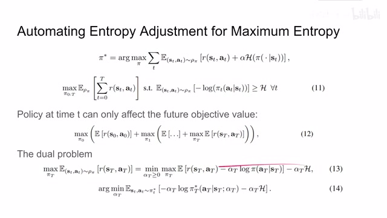
00:04:36–00:04:37 · 画面 00700:04:37–00:04:39 · 画面 008
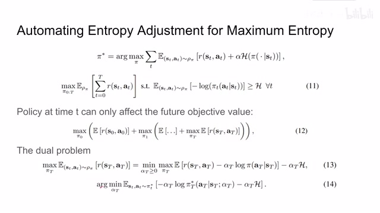
00:04:37–00:04:39 · 画面 008也就是说，我需要优化一个α来使这个式子比较最小，因为这个 reward 里面是没有α的嘛，所以这里就去掉了。好的，那么这个呢式子呢我们看到呢是针对这个提时刻的，也就是这个序列最后的一个 step 它做的事情。然后呢加上我们之前的这个等式 12，我们就可以一步一步的从最后慢慢的把这个问题给它推推推推到最前面。那我们来看作者是具体怎么做的。
00:04:39–00:04:43 · 画面 009
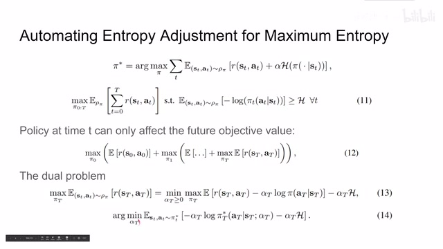
00:04:39–00:04:43 · 画面 00900:04:43–00:05:06 · 画面 010
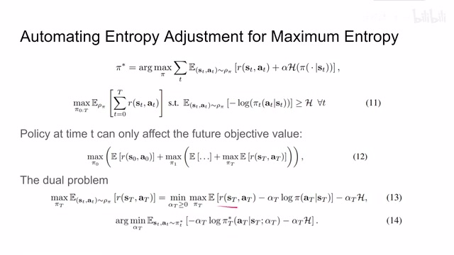
00:04:43–00:05:06 · 画面 01000:05:06–00:05:52 · 画面 011
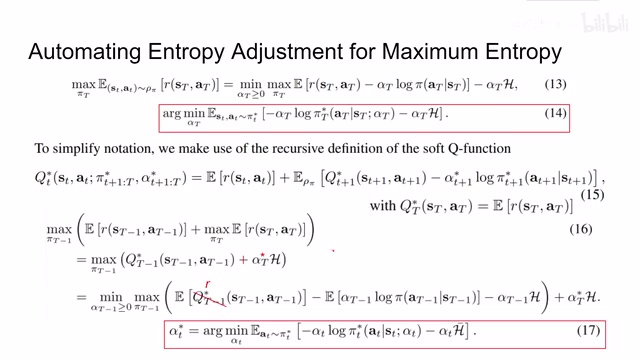
00:05:06–00:05:52 · 画面 011这里等式 13 14 就是我们刚刚介绍的在最后一个时刻优化α的问题。那么为了简化表达，这里做着把原来的 softq function 它的定义给拿出来了。这个在我们定义 Bellman backup operator 的时候就用的是这个式子。而对于这个式子，它有一个特殊的情况，也就是我们取到 t 的时候，然后 t 的时候因为我们下一步没有更新的状态了。
所以这个 q star t 这个最优的 policy 它对应的这个 q value 呢就是等于这个 reward 在 t 时刻的 reward 它的期望。然后呢我们就可以根据之前的定义把这个时间一步一步的从 t 时刻往前推。那么假设我们之前推一步，这里呢我们使用 t 减一时刻的 policy 使得这一块它能够取得最大值。那么根据刚刚这个式子的拆解嘛，我们就可以写出来这个它是 t 减一时刻的 reward。
00:05:52–00:05:56 · 画面 012
00:05:52–00:05:56 · 画面 01200:05:56–00:06:04 · 画面 013
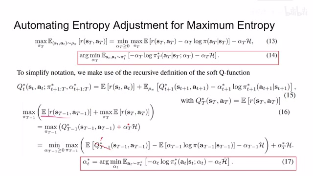
00:05:56–00:06:04 · 画面 013加上 t 时刻我们能够取得的最大的这个期望，也就是这个 qt star。那么当我们拿到这个式子之后呢，我们就要开始对比 qt star 它的定义了。哎，我们看到 reward 这一项呢跟 reward 这一项正好对上。那么后面这一项呢我们看到有 q value，这里呢因为我们有这个等式吗，所以呢这个 q value 也就对应了是这个项目。
00:06:04–00:06:05 · 画面 014
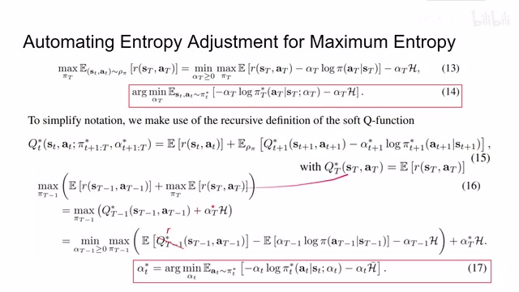
00:06:04–00:06:05 · 画面 01400:06:05–00:06:20 · 画面 015
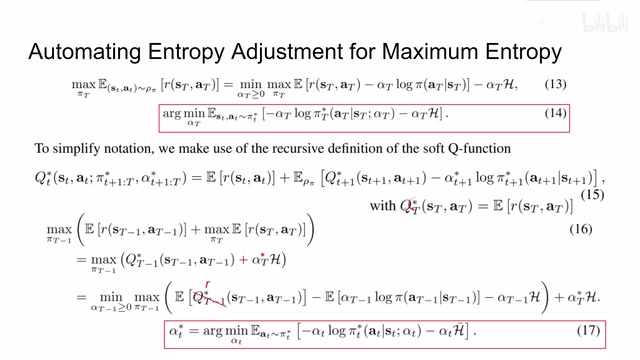
00:06:05–00:06:20 · 画面 01500:06:20–00:06:21 · 画面 016
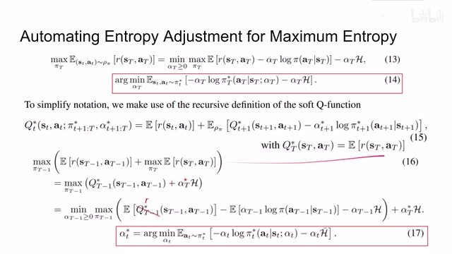
00:06:20–00:06:21 · 画面 01600:06:21–00:06:30 · 画面 017
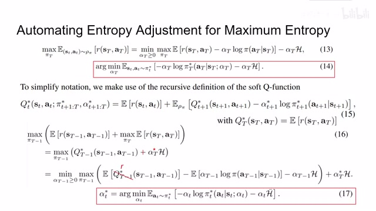
00:06:21–00:06:30 · 画面 017那么我们为了凑一个这个 q 在 t-1 时刻的 q，那我显然还需要把这一项给它补上。所以呢，这个地方我不太同意原来作者他在论文中的表达，我这里呢做了一点修改。也就是说，当我把这两项换成了 q 之后呢，我要应该是其实是加上这个αt 乘以这个 h 也就是这一项。
00:06:30–00:06:31 · 画面 018
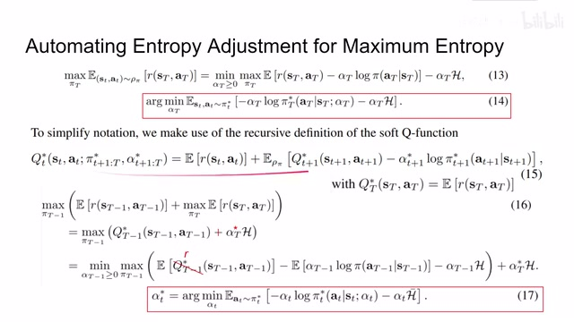
00:06:30–00:06:31 · 画面 01800:06:31–00:06:40 · 画面 019
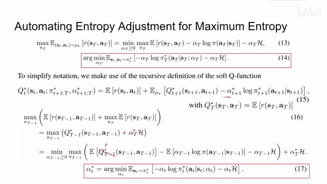
00:06:31–00:06:40 · 画面 01900:06:40–00:06:47 · 画面 020
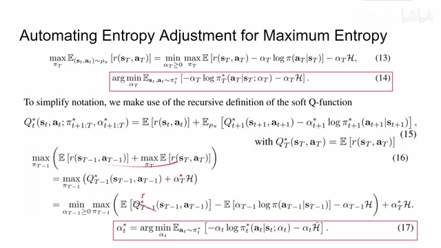
00:06:40–00:06:47 · 画面 02000:06:47–00:07:02 · 画面 021
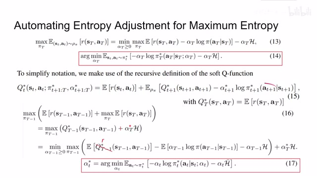
00:06:47–00:07:02 · 画面 021因为我们已经在这一项里面取得一个 maximum，所以呢这些这个 policy 啊这些 alpha 都应该是最优的。所以呢我这里又直接用了一个 alpha t star。那么形成这样的式子之后呢，我们再应用之前的这个队友的变化，就等式 13 中这个队友的变化，我们呢把它变成一个队友的问题。那可以看到呢，我们把这个 qt-1 这个值给它再拆开，那这里呢也是我觉得它这里应该是这个 r 就按照这个公式的形式。
00:07:02–00:07:03 · 画面 022
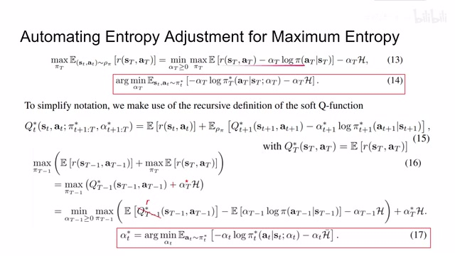
00:07:02–00:07:03 · 画面 02200:07:03–00:07:18 · 画面 023
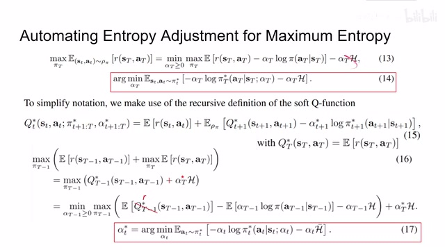
00:07:03–00:07:18 · 画面 02300:07:18–00:07:19 · 画面 024
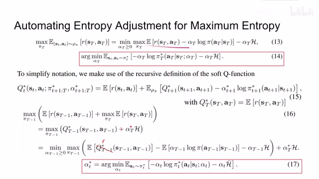
00:07:18–00:07:19 · 画面 02400:07:19–00:07:25 · 画面 025
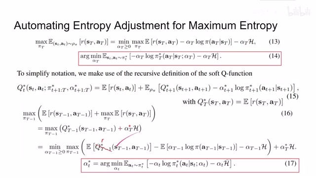
00:07:19–00:07:25 · 画面 025拆成 T-1 时刻的这么一个对偶的问题。然后呢记得把这个长寿相补到这个后面。那么这样子呢，我们先优化一个 T-1 时刻的 policy，然后呢再优化一个 T-1 时刻的 alpha 就可以了。那么 T-1 时刻的 alpha 呢就是形如这样的一个式子，其实也是跟最后一个时刻它的式子是一样的嘛。那么得到这样一个式子之后呢，我们再不断的向前去把。
00:07:25–00:07:26 · 画面 026
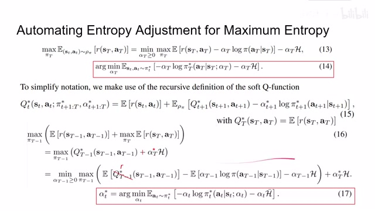
00:07:25–00:07:26 · 画面 02600:07:26–00:07:33 · 画面 027
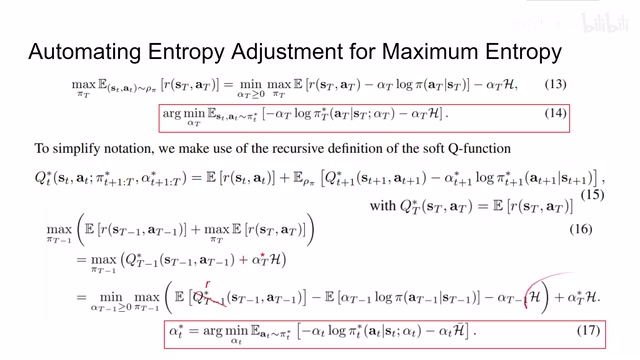
00:07:26–00:07:33 · 画面 02700:07:33–00:07:34 · 画面 028
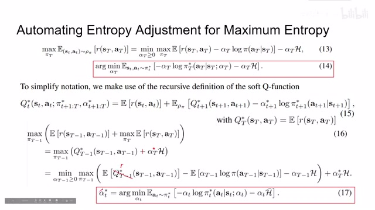
00:07:33–00:07:34 · 画面 02800:07:34–00:07:43 · 画面 029
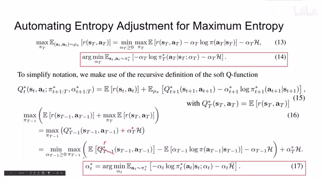
00:07:34–00:07:43 · 画面 02900:07:43–00:07:44 · 画面 030
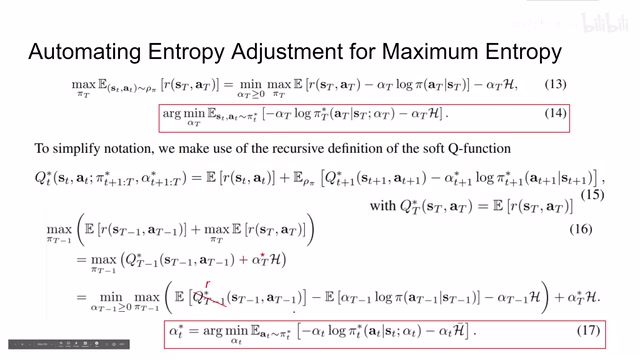
00:07:43–00:07:44 · 画面 03000:07:44–00:07:53 · 画面 031
00:07:44–00:07:53 · 画面 031这个等式展开就到 T 减 20 克 T 减 30 克这样不断向前展开。那么所有时刻的这个α呢其实都满足这个形如这样的一个式子。这也就是意味着无论我们在哪一个时刻都可以利用一个形如这个式子这个期望的式子呢我们去优化这个α。这样子呢就达到了我们自动去调整 entropy 的目的。那么我们直接来看到它的算法的流程。
00:07:53–00:07:54 · 画面 032
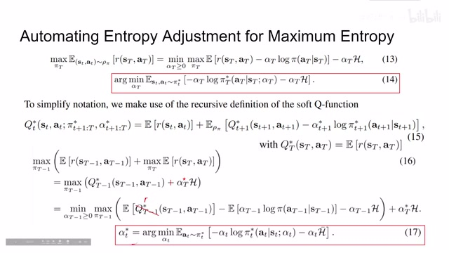
00:07:53–00:07:54 · 画面 03200:07:54–00:08:03 · 画面 033
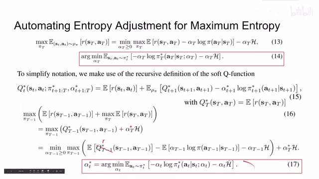
00:07:54–00:08:03 · 画面 03300:08:03–00:08:06 · 画面 034
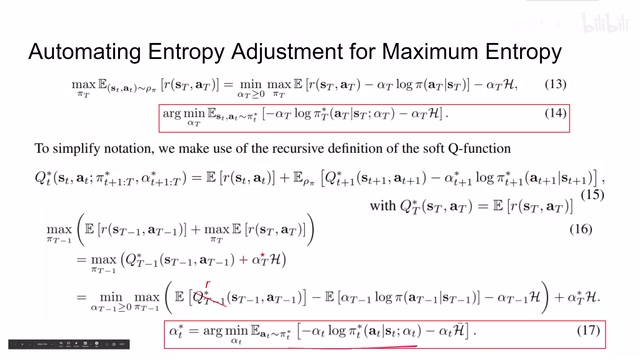
00:08:03–00:08:06 · 画面 03400:08:06–00:08:10 · 画面 035
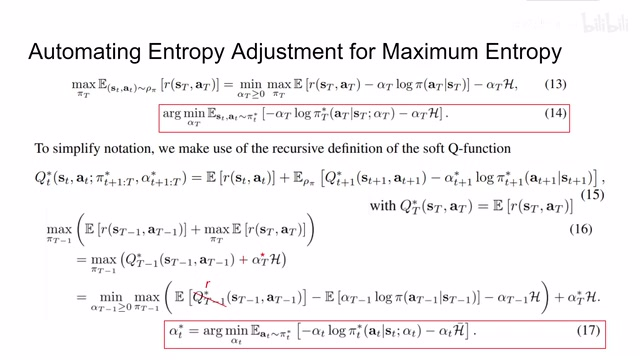
00:08:06–00:08:10 · 画面 03500:08:10–00:08:12 · 画面 036
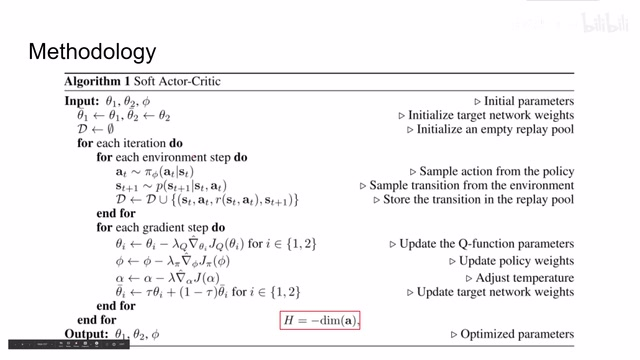
00:08:10–00:08:12 · 画面 03600:08:12–00:08:45 · 画面 037
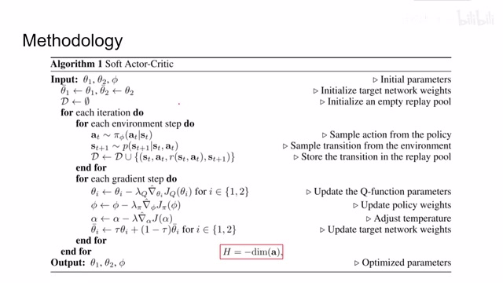
00:08:12–00:08:45 · 画面 037那么对比之前的这个第一个版本 soft actor critic 的这里呢，作者取消了原来的这个 state value network，也就是说呢，我们这里只维护两个 q value network 还有一个 policy 这个 file。那么其他呢还是跟我们一开始的这个 soft actor critic 一样，首先呢在环境中采样，然后呢更新我们的 q value。更新完 q value 之后呢，更新这个我们的 policy。
那么在获得一个在这个阶段比较好的 policy 之后呢，我们呢要更新 alpha 这个 j 呢，就是我们刚刚要优化的这个式子，就是期望里面的这个式子，我们还是就是使用很多个样本的平均值来作为对这个 j 的估计，那么估计好了也是使用这个 momentum 来更新我们的 target Q network，那么经过了这样一块操作呢，我们说虽然实现了对 alpha 的自动更新
00:08:45–00:08:47 · 画面 038
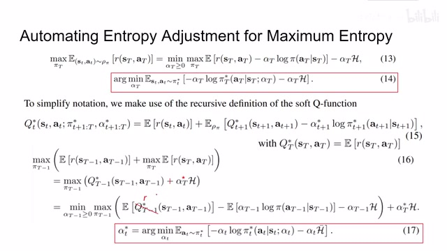
00:08:45–00:08:47 · 画面 03800:08:47–00:08:51 · 画面 039
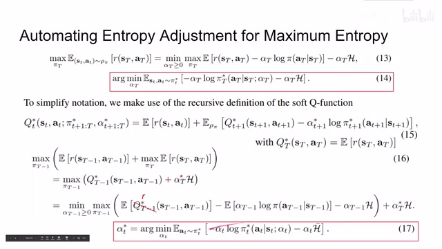
00:08:47–00:08:51 · 画面 03900:08:51–00:08:54 · 画面 040
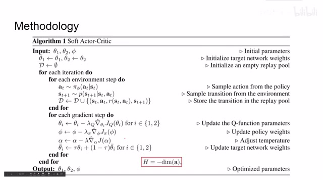
00:08:51–00:08:54 · 画面 04000:08:54–00:09:08 · 画面 041
00:08:54–00:09:08 · 画面 041但是呢，有的朋友可能已经注意到了，就是我们在一开始这个位置的时候是需要人工的给定它一个 entropy 的，那实际上就是相当于我们把 alpha 这个 hyperparameter 给它去掉了，但是呢我又引入了一个新的 hyperparameter，这个 entropy 就有点拆东墙补西墙的感觉，但是呢作者说不要怕对吧，我们对于这个 entropy 有一个经验的公式，我们可以根据 action space 它的大小来作为这个 entropy 的经验值
00:09:08–00:09:10 · 画面 042
00:09:08–00:09:10 · 画面 04200:09:10–00:09:23 · 画面 043
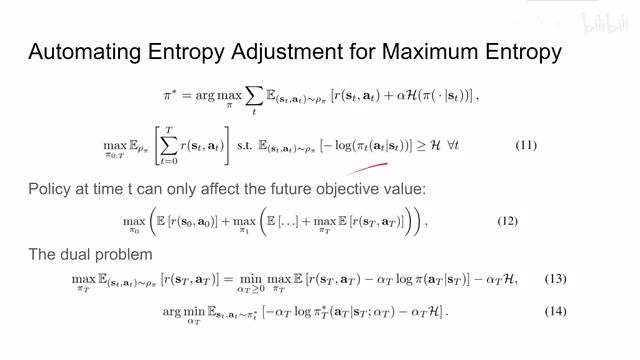
00:09:10–00:09:23 · 画面 04300:09:23–00:09:26 · 画面 044
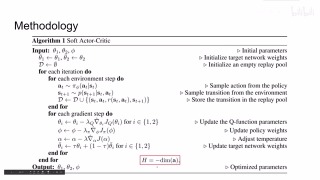
00:09:23–00:09:26 · 画面 04400:09:26–00:09:28 · 画面 045
00:09:26–00:09:28 · 画面 04500:09:28–00:09:33 · 画面 046
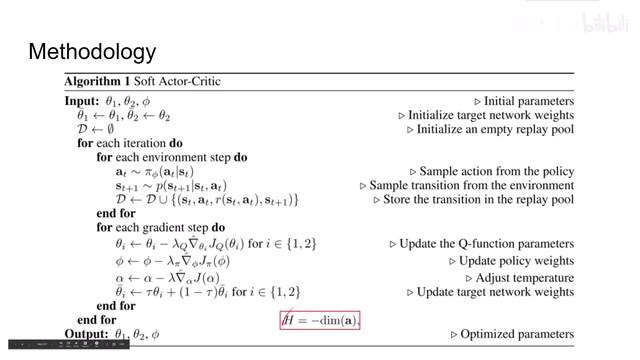
00:09:28–00:09:33 · 画面 04600:09:33–00:09:37 · 画面 047
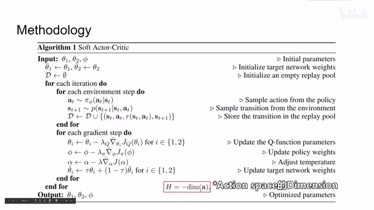
00:09:33–00:09:37 · 画面 047这样子呢就避免了人工的去给定这么一个 hyper parameter，好的，那么以上呢就是本篇论文中针对这个 alpha 这个 hyper parameter 它的估计和调整，那么现在呢我们来直接看结果，那这里呢这个蓝色的线呢是使用了这个自动估计的这个 alpha temperature，那么橙色的线呢是使用一个人工给定的固定的这个 temperature，我们看到呢在一些环境里面比如说 Walker2d 啊还有 HalfCheetah 啊
00:09:37–00:09:41 · 画面 048
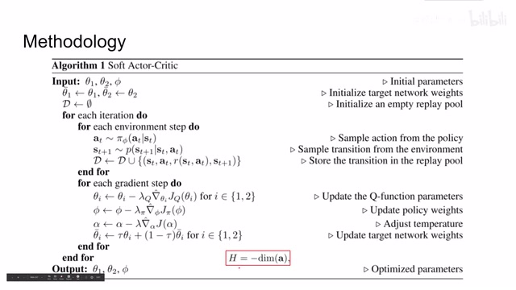
00:09:37–00:09:41 · 画面 04800:09:41–00:09:43 · 画面 049
00:09:41–00:09:43 · 画面 04900:09:43–00:09:45 · 画面 050
00:09:43–00:09:45 · 画面 05000:09:45–00:09:47 · 画面 051
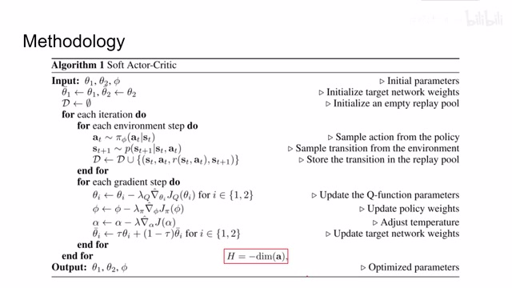
00:09:45–00:09:47 · 画面 05100:09:47–00:09:51 · 画面 052
00:09:47–00:09:51 · 画面 05200:09:51–00:09:52 · 画面 053
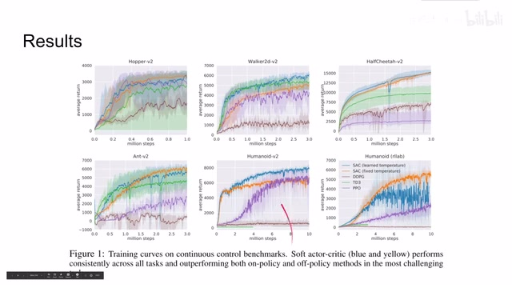
00:09:51–00:09:52 · 画面 05300:09:52–00:10:52 · 画面 054
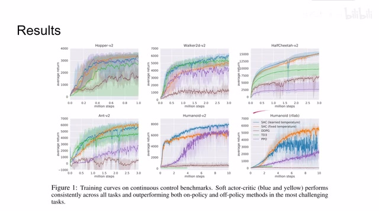
00:09:52–00:10:52 · 画面 054我们的自动学习的 temperature 它的表现是比原来固定的 temperature 要好的，但有些情况还是固定的 temperature 它的性能表现要好一些，那么当然即便如此，本的方法基本还是 outperform 其他的这些方法，除此之外，作者还在真实世界的环境中，一个是一个四足的机器人，还有一个是三个机械手去拧阀门的这样一个任务，他做了一些实验感兴趣的朋友可以去他项目网站查看他一些演示的内容，好的，那么以上就是我对这篇论文的简单的分析，之前说过的公式的问题我已经跟作者发邮件了，我们期待作者尽快会给我们一个详细的介绍，好的，那么感谢您的收看，再见
00:10:52–00:10:53 · 画面 055
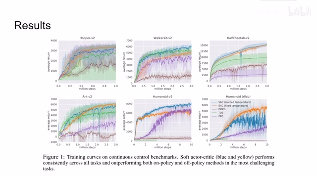
00:10:52–00:10:53 · 画面 055转写与来源说明 · 0 个自动复核提示
保留 24 个原始语音片段，0 个片段触发自动复核提示。提示仅用于定位可能的术语、重复或识别问题，不等于已确认错误。
讲解画面为源视频截图（640×360），不是可编辑 PPT 文件。全片按每秒 2 帧扫描内容变化，逐步展开页保留；连续动画保留代表画面。清晰度受源视频限制。
原视频：paper/合集_2026-10-16_机器人学/[论文简析]SAC Soft Actor-Critic Part 2[1812.05905].mp4
SHA-256：b426dcc6a6227d4caa25e26e45b29cbbe38cfb90ca880eba5ecfa3c50dc100c8
全文按视频语音与画面制作。原论文可从上方链接下载；完整资料包保留全文、原始逐字稿、字幕和校对记录。